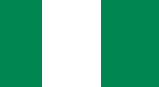

Patrick Osakwe
About Me
My name is Patrick, I am a student studying Dynamic Web Fundamentals. I enjoy learning new things and developing my skills in web development. I am excited to learn more about HTML, CSS, and JavaScript in this course.
Abuja, Nigeria

Nigeria is a country in West Africa. Abuja is the capital city of Nigeria. Nigeria has many different cultures, languages, and traditions. It is also known for its diverse people, food, music, and natural resources.